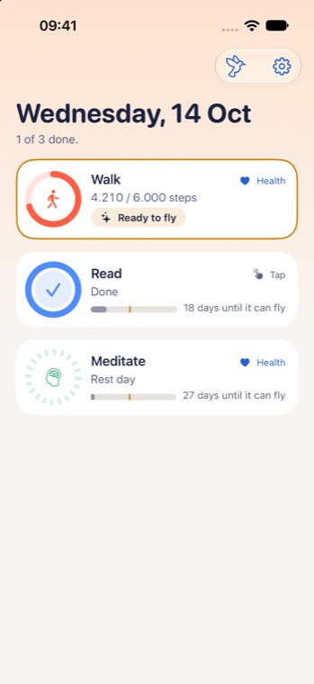
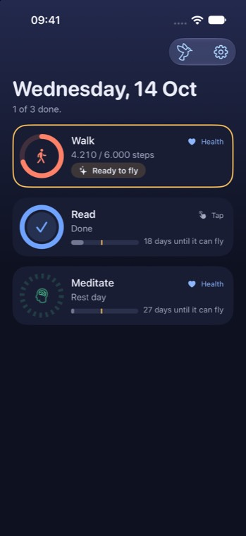
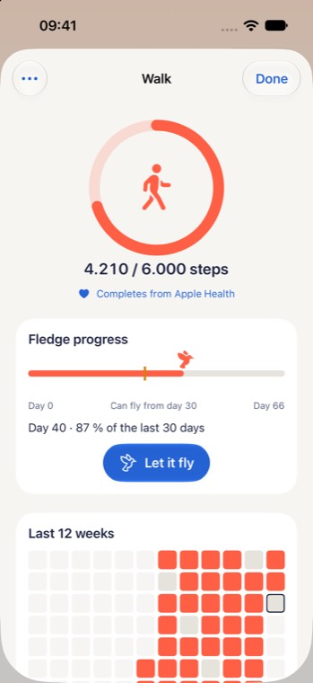
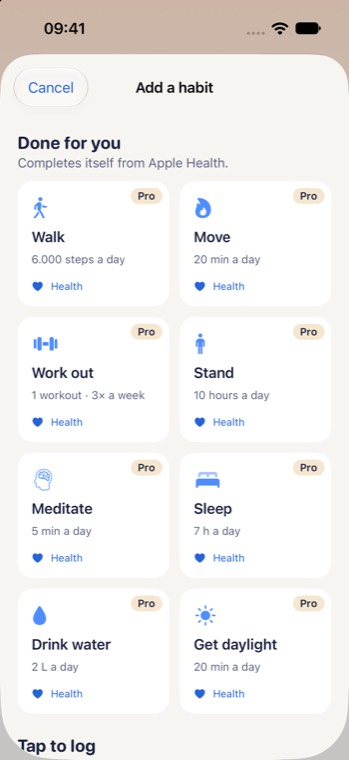
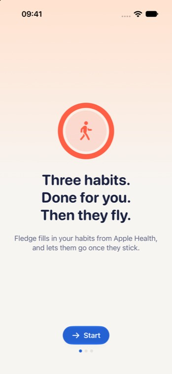
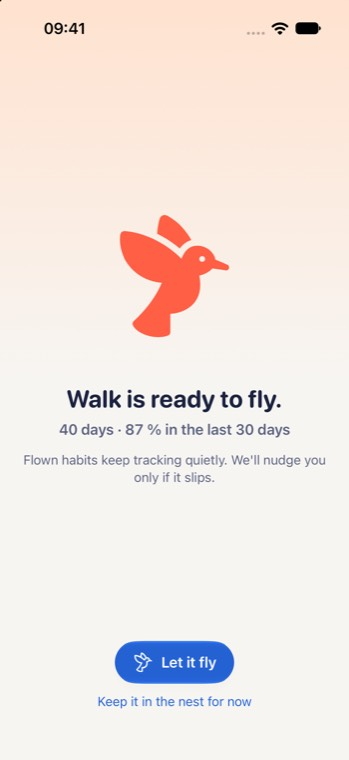
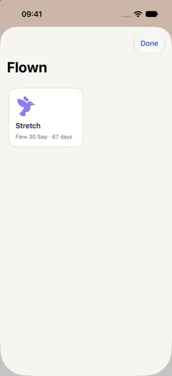
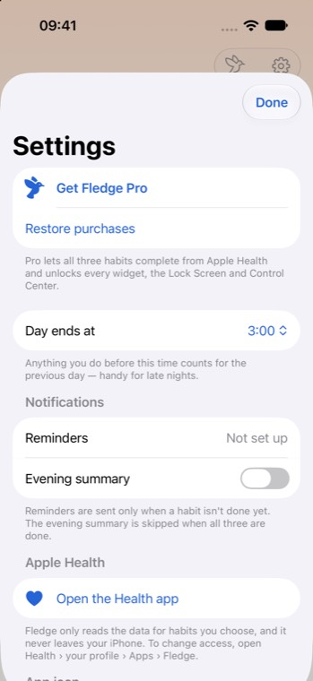
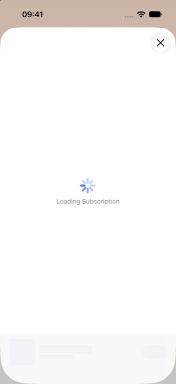

The engine, the copy and the concept are strong. The interface is not yet doing them justice. It reads as a careful prototype: generic symbols where the brand should be, half an empty screen, and four competing signals on every card. This plan brings the app icon's character into the product, gives every screen one clear hero, and fits inside the time left before the 29 November feature freeze.
Simulator captures from build 0.1 with demo data (iPhone 17, iOS 27). The paywall shows only a spinner because the command-line launch doesn't load the StoreKit configuration, but a slow network leaves real users looking at the same blank sheet.









| Issue | What we see | Why it matters | Impact |
|---|---|---|---|
| Brand missing | The icon is a round white fledgling with a checkmark wing. In the app, every bird is SF Symbols' bird.fill, a hummingbird: toolbar, onboarding, graduation, Flown, paywall | The one distinctive asset never shows up where users spend time. This is the biggest gap between "prototype" and "product" | High |
| Today feels empty | Three short cards, then about 380 pt of blank background. The summary "1 of 3 done." is 15 pt grey text | The home screen sets the impression in screenshots and in the first five seconds. Empty space reads as unfinished, not calm | High |
| Card hierarchy | Ring, value, source badge and flight track all carry about the same weight. "4.210 / 6.000 steps" puts value and goal in one style | The answer to "how am I doing?" needs one glance. Today it takes a read | High |
| Status language | Done swaps the habit's symbol for a generic check. Rest day's dashed ring looks like a loading spinner. The flight track's grey fill and orange tick have no labels | Users lose which habit is which, and the graduation concept, the main differentiator, goes unexplained | High |
| Colour noise | The CTA is blue, the header peach, rings use habit colours, and every "Health" label is also blue | Blue is everywhere, so it no longer marks the action. Habit colour shows only inside the ring | Medium |
| Add sheet | Tall tiles in identical blue. A free user sees "Pro" on all 8 Health tiles, and "Tap to log" and Custom are below the fold | It reads as a wall of locks, and it slows the most important flow, adding a habit | High |
| Detail sheet | "Fledge progress" is internal jargon. The bird icon overlaps the day-30 tick. The heatmap has no weekday or month labels, its cells are oversized, and stats are below the fold | The stats screen is where people judge whether the app is "serious" | Medium |
| Graduation | A stock bird, a line of stats, mostly empty space. Nothing to share | This is the moment that makes Fledge different, and the best organic marketing asset it has | High |
| Flown shelf | One tile on a blank sheet. No totals, no "holding" rate | The reward for the whole loop feels like an afterthought | Medium |
| Paywall | Stock SubscriptionStoreView layout. No free-vs-Pro comparison, no trial timeline, no designed loading state | The paywall drives revenue. Trial-timeline paywalls are now the norm in health apps | High |
| Onboarding | One walking ring on screen 1. Plain progress dots and no back button | Under 60 seconds is right. The first screen should show the whole idea: three rings that fill by themselves, then fly | Medium |
| Settings | Plain form. "Get Fledge Pro" looks like any other row. "Restore purchases" is near the top for free users | Small, but it is where reviewers look for polish | Low |
| App | What works | Take for Fledge |
|---|---|---|
| Streaks | Apple Design Award. Big tappable circles, one gesture to complete, very low friction, widgets whose ring fills as you go | Make the ring the main control and enlarge it. Keep one gesture per action |
| (Not Boring) Habits | Treats each check-off as an event, with 3D, sound and haptics. Focus on building one habit at a time | Make "done" the best 0.8 s in the app: ring closes, check draws in, feathers lift |
| Gentler Streak | Apple Design Award 2024. Rest is a first-class state, numbers are shown simply, and the home view changes with the time of day | Show rest as calm, not as a broken loop. One plain summary sentence. Keep the time-of-day sky |
| Apple Fitness rings | One glyph tells the whole day | A "nest" glyph of three mini rings in the Today header, matching the small widget |
| HabitKit | A GitHub-style grid as its visual identity. Strong widgets. A solo developer that took off in January | Label the heatmap properly and use it on the graduation recap and the share card |
| Structured, Tiimo | Award-winning calm: soft colour, generous type, inclusive by default | Use habit colour as a soft card wash, not just a stroke. Keep AX5 and VoiceOver as launch features |
| Health and fitness paywalls | Trial timeline (today, reminder on day 5, billed on day 7), annual price shown per month, the user's own goals on the paywall, a visible way to cancel | Name the user's habits in the headline, add a free-vs-Pro table, show the timeline, and design a loading state |
| Liquid Glass guidance | Glass on the navigation layer only, grouped in one GlassEffectContainer, with consistent shapes | Already in DESIGN.md. Keep it, and keep cards solid |
Keep everything DESIGN.md already gets right: one screen plus sheets, no guilt, glass only on navigation, SF Pro Rounded numbers. Change how it is expressed.
A vector FledgeBird drawn in SwiftUI, with poses for sitting, peeking, flying and sleeping. It replaces every bird.fill, in the app and in widgets.
Today: the day's summary. Detail: today's number. Graduation: the bird. Everything else steps back.
Values in rounded 800 weight. Goals, units and sources in small secondary text.
Habit colour runs through the ring, the card wash and the heatmap. The CTA is ink, links are skyText, gold is for flying.
Done: a full ring with a check badge, and the symbol stays. Rest: a soft moon badge. Ready: a gold edge and a button.
Feather burst on done, a flight path on graduation, a shareable recap card. Reduce Motion gets cross-fades.
y 1/6, blur 2/18, 5–6 %) in light mode and a 1 pt hairline stroke in dark mode. Cards currently disappear on the cloud background.metric (title2, rounded, heavy, monospaced digits), eyebrow (caption2, semibold, tracked, uppercase), meta (caption, ink2).FledgeBird, NestGlyph, WeekStrip, JourneyTrack (milestones at day 1, 30 and 66), IconSquare (settings and template rows), MetricText, FeatherBurst (Canvas), ShareRecapCard (ImageRenderer).HTML mockups at iPhone proportions, drawn from the app's own tokens. They follow your light or dark setting, so switch themes to check the dark variant.
ProPolicy.SubscriptionStoreView with a custom header and a ProductView skeleton while it loads..success. A partial log steps the ring forward with .light. Ready to fly pulses the gold edge once.Ticket IDs continue the backlog's naming. The estimates are focused days for one developer. The work is UI-only: no schema changes and no write-API changes, and business logic stays in HabitCore under test.
FledgeButtonStyle), type ramp (metric, eyebrow, meta). FledgeTheme.swiftShape set in four poses, plus snapshot tests. Replace every bird.fill. FledgeUI, widgets-FledgeDemoScreen in light and dark, at default and AX3 text sizes, for before/after review.NestGlyph, WeekStrip (needs a 7-day WeekModel in FledgeUI, tested), Flown shelf preview. TodayView.swiftJourneyTrack, labelled heatmap and legend, pinned "Let it fly". HabitDetailSheet.swiftIconSquare, one Pro banner, per-template colours. AddHabitSheet.swiftImageRenderer + ShareLink). GraduationView.swiftHoldingRate model in HabitCore, tested), empty state. FlownSheet.swiftdocs/DESIGN.md, docs/SPEC.md, docs/BACKLOG.md, and the screenshots in Design/review/current/